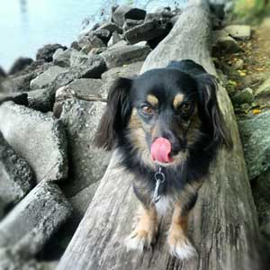

Who am I?
I have been painting, drawing, sculpting and enjoying art since I was little. My mom entertained me with colouring books and craft sets and the hobby carried on into my adult life in small ways — a minor in fine arts, an easel in my living room, a sketchbook in my bag, and little commissions for my friends. Still not yet an artist, I make art when life inspires. This web site is an effort to capture some of the work I have created and hopefully inspiration to create more.
I welcome custom art commissions of any kind — paintings, drawings, sculpture, mixed media, etc. Please contact me with the details of your commission, along with your budget and dimensions. I will follow up with you on pricing, timeline and expectations.
e-mail: cferancik@gmail.com
twitter: @tinaferan
Tui
I hear the best way to get traffic to a web site is to include cute cat pictures. I don't have any cute cats in my life, but I do have one adorable dog — Tui, T, T-bird, Tuibird, Lil'man, Trouble — whatever name he goes by, this little Chihuahua-Daschund cross is the one little heartbeat that I am responsible for. Not that I always do the best job at keeping him happy, healthy and attention-satisfied, but we have found a rhythm and a friendship that brings inspiration.
Because he is far more adorable than I could ever be, I've included some of my favourite Tui pictures and one day I'll add a video of me ordering him back into the house when I have to leave. You have never seen a more dejected little creature.
|  |